CS 2150 Roadmap
Data Representation | Program Representation | |||||
| string int x[3] char x 0x9cd0f0ad 01101011 |
Objects Arrays Primitive types Addresses bits |
Java code C++ code C code x86 code IBCM hexadecimal |
High-level language Low-level language Assembly language Machine code |
|||
Airline Routes
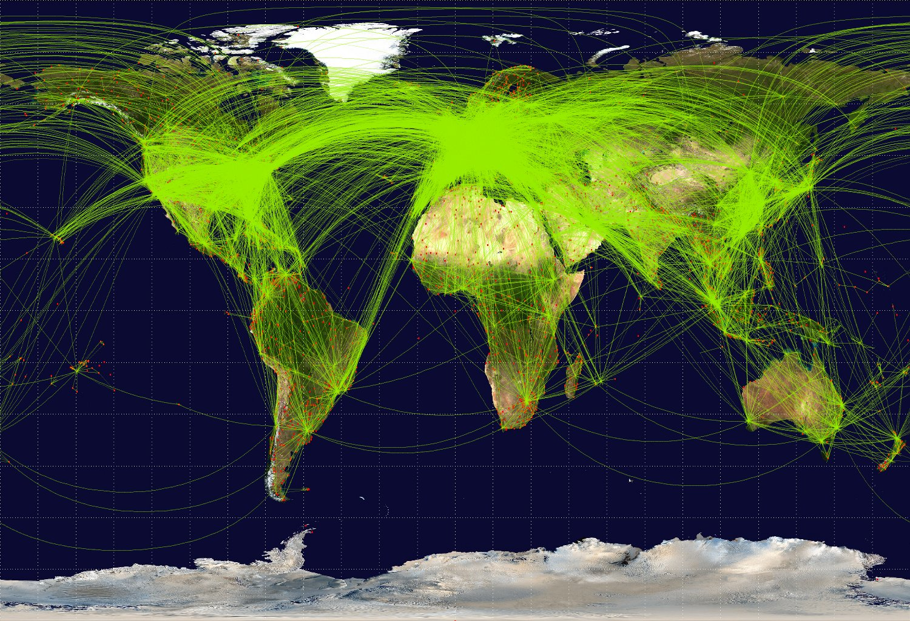Flowcharts

Pre-requisite Diagrams

Representation: Adjacency Matrix
\( A[u][v] = \left\{ \begin{array}{l l} weight & \quad \text{if ($u$,$v$) $\in$ $E$}\\ 0 & \quad \text{if ($u$,$v$) $\notin$ $E$}\\ \end{array} \right. \)
| 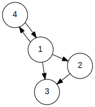 |
Representation: Adjacency List
| 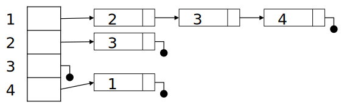 |
Topological Sort
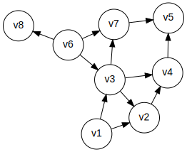One valid topological sort is: v1, v6, v8, v3, v2, v7, v4, v5
This is already topologically sorted!
Another Topological Sort Example
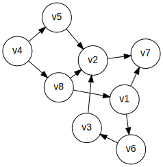Shortest Path Algorithms
- This version is called the "single-source" shortest path
- Given a graph \( G = (V, E) \) and a single distinguished vertex s, find the shortest weighted path from s to every other vertex in G
The weighted path length of \( v_1, v_2, \ldots , v_n \):
\( \sum_{i=1}^{n-1}c_{i,i+1} \) where \( c_{i,i+1} \) is the cost of edge \( (v_i,v_{i+1}) \)
Unweighted Shortest Path
- Special case of the weighted problem: all weights are 1
- Solution: breadth-first search; similar to level-order traversal for trees
Dijkstra's Algorithm
| 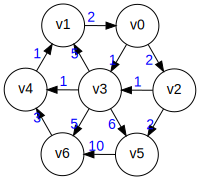 |
Another Dijkstra's Algorithm Example
| 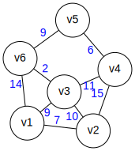 |
This is the same graph as in the Wikipedia article on Dijkstra's algorithm
Shortest Path Example Problem
From the ICPC Mid-Atlantic Regionals, 2009

How would you drive to Seattle?
And what constitutes a "highway"?
The Eisenhower Interstate System 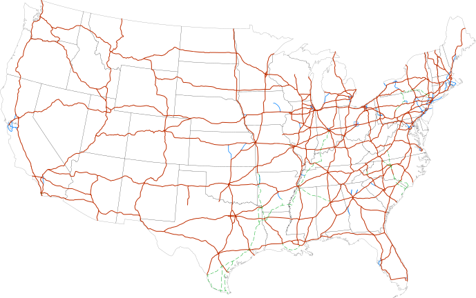
{kind=link}
A Google Maps Screenshot
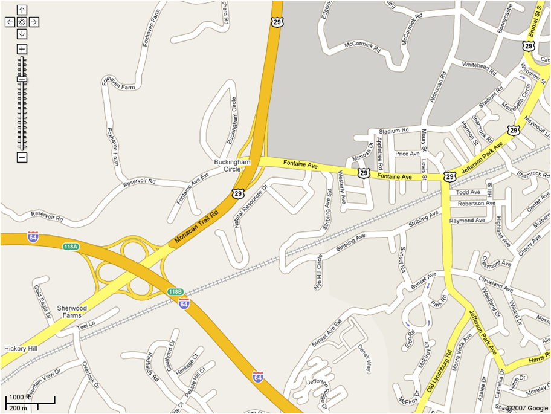Hard
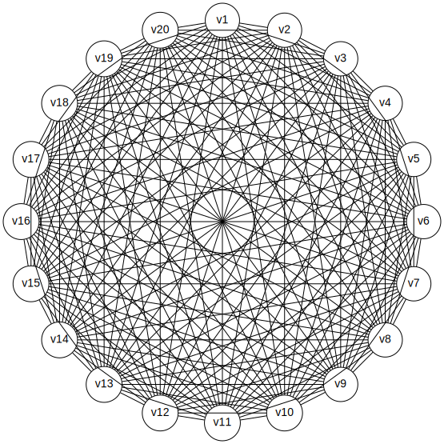Really Hard
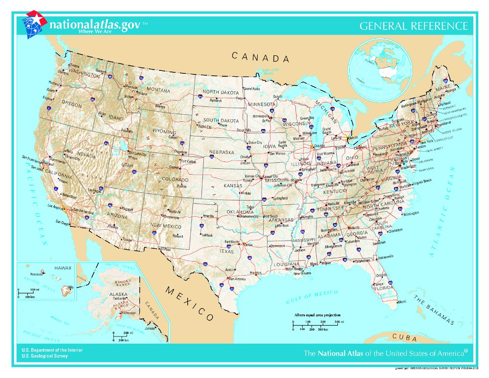 (source){kind=link}
Spanning Trees
Original graph:
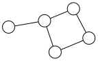Possible spanning trees:
| 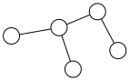 |  |
 |
Minimum Spanning Trees
- Given a connected and undirected graph G = (V,E), find a graph G' = (V,E') such that:
- E' is a subset of E
- |E'| = |V| - 1
- G' is connected
- \( \sum_{(u,v) \in E'} c_{uv} \) is minimal
- G' is then a minimal spanning tree
- Applications: wiring a house, cable TV lines, power grids, Internet connections
Prim's MST Algorithm
| 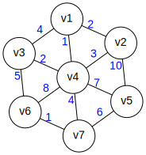 | 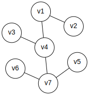 |
Edges: (v1,v2), (v1,v4), (v3,v4), (v4,v7), (v5,v7), (v6,v7)
Kruskal's MST Algorithm
Edges: (v1,v2), (v1,v4), (v3,v4), (v4,v7), (v5,v7), (v6,v7)